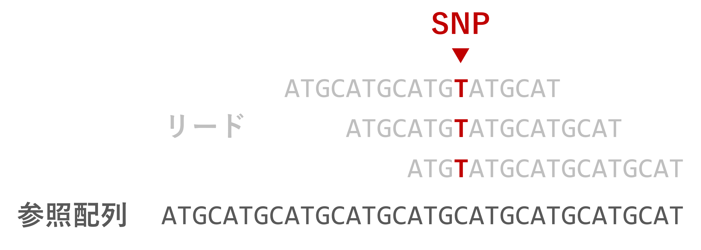

全ゲノム解析ハンズオン 2024 新村グループ
スモールデータで理解する SNP 解析の流れ
基本的なコマンドライン操作①
cd (change directory)-
ディレクトリ📁を移る
mkdir (make directory)-
新しいディレクトリを作成する
ls (list segments)-
ディレクトリ内のファイル、ディレクトリを表示する
mv (move)-
ファイル、ディレクトリを移動する/名前を変更する
rm (remove)-
ファイル、ディレクトリを削除する
基本的なコマンドライン操作②
pwd-
今いるディレクトリのフルパスを表示する
> (リダイレクト)-
コマンドの結果をターミナルに表示する代わりに、ファイルに書き込む
head -n N-
ファイルの先頭 N 行を表示する (デフォルトは10行)
tail -n N-
ファイルの末尾 N 行を表示する (デフォルトは10行)
less-
ファイルを閲覧モードで開く。
Q で閉じる。
SNP 解析の流れ
flowchart TD
A(Sample) -.->|DNA 抽出| B(DNA)
B -.->|NGS| C[Fastq]
X[(NCBI)] -.->|prefetch| C
C -.->|リードマッピング| D[SAM/BAM]
D -.->|バリアントコール| E[VCF/BCF]
- リードマッピング
-
リードを参照配列の相同な位置に貼り付ける
-

- バリアントコール
-
参照配列と異なる配列を特定する
-

今日使うデータの説明

大腸菌 Escherichia coli (E. coli)
- ゲノムサイズが約 4.6Mb と小さい
(ニワトリで約 1Gb)
- 参照配列: B str. REL606 (Ensembl47)
- SRA ショートリード: SRR030257
- なんのデータ？
-
高温条件下での進化実験 20,000世代 (Barrick et al. 2009)
- 問い
-
高温条件で進化させるとどんな遺伝子に変異が入るのか？
今日使うソフトウェア一覧
- 公開データの取得
- クオリティコントロール (QC)
- リードマッピング
- バリアントコール
- SNP アノテーション
Fastq ファイルの中身を見てみる
head SRR030257_1.fastq # 先頭行を表示
4行でひとまとまり (1リード) のデータ:
@SRR030257.1 HWI-EAS_4_PE-FC20GCB:6:1:385:567 length=36 # @リードの情報
TTACACTCCTGTTAATCCATACAGCAACAGTATTGG # 配列
+SRR030257.1 HWI-EAS_4_PE-FC20GCB:6:1:385:567 length=36 # +
AAA;A;AA?A?AAAAA?;?A?1A;;????566)=*1 # クオリティ値
クオリティ値
Fastq の4行目は、各塩基のクオリティ値が記号で記されている。
記号と数字の対応は以下の通り (ASCII コード):
Quality encoding: !"#$%&'()*+,-./0123456789:;<=>?@ABCDEFGHI
| | | | |
Quality score: 0........10........20........30........40
これらの数字 (Q値) は Log スケールであり、ある塩基が間違って読まれている確率を \(P\) として、
\[
Q = -10 \times \log_{10}{P}
\]
で計算される。
例えば ? なら \(Q=30\) で、間違って読まれている確率は \(P=0.001\)。
NGS 配列のクオリティコントロール
- 低品質な (Q値の低い) 塩基
- アダプタ配列の混入
- PCR duplicates
- 他サンプルのコンタミネーション
- など

偽陽性バリアントの増加
クオリティコントロールのツール
| FastqPuri |
C, R |
fq |
〇 |
〇 |
〇 |
〇 |
〇 |
| fastp |
C++ |
fq, gz |
〇 |
〇 |
〇 |
x |
〇 |
| Fastq Screen |
perl |
fq |
x |
x |
x |
〇 |
x |
| trimmomatic |
java |
fq, gz |
x |
〇 |
〇 |
x |
〇 |
| FastQC |
java |
fq, gz |
〇 |
x |
x |
x |
x |
| RSeQC |
C, Python |
BAM/SAM |
〇 |
x |
x |
x |
x |
Pérez-Rubio et al. 2019 Table. 1 より抜粋
QC: Quality Control
QF: Quality Filtering
Ad: アダプタ配列除去
cont: コンタミ除去
PE: Paired-end 対応
今回のハンズオンでは、C++ 製で高速、
圧縮ファイル (gz) にも対応した fastp を使う。
fastp によるクオリティコントロール
fastp -i SRR030257_1.fastq -I SRR030257_2.fastq \
-o qc_SRR030257_1.fq.gz -O qc_SRR030257_2.fq.gz \
-q 20 -u 40 -h SRR030257.qc.html
-i, -I-
入力 Fastq ファイル。Single-end の場合
-i のみ。
-o, -O-
出力 Fastq ファイル。Single-end の場合
-o のみ。
-
.gz をつければそのまま圧縮可能。
-h-
レポートファイル (
.html) の出力先
fastp によるクオリティコントロール
fastp -i SRR030257_1.fastq -I SRR030257_2.fastq \
-o qc_SRR030257_1.fq.gz -O qc_SRR030257_2.fq.gz \
-q 20 -u 40 -h SRR030257.qc.html
-q-
クオリティ値の下限 (デフォルトは15)
-u-
基準を下回る塩基が何%以上含まれているリードを除くか (デフォルトは40)
今回の場合、\(Q<20\) の塩基が40%以上含まれれるリードを除去。